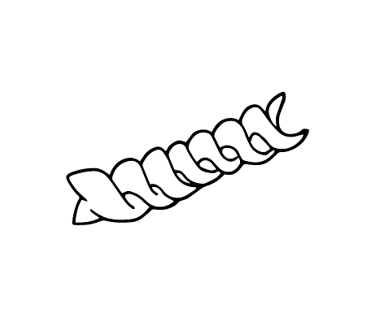

Discription:
Fusilli are a variety of pasta that are formed into corkscrew or helical shapes. The word fusilli presumably comes from fuso ("spindle"), as traditionally it is "spun" by pressing and rolling a small rod over the thin strips of pasta to wind them around it in a corkscrew shape.[1] In addition to plain and whole wheat varieties, as with any pasta, other colours can be made by mixing other ingredients into the dough, which also affects the flavour, for example, beetroot or tomato for red, spinach for green, and cuttlefish ink for black. The term fusilli is also used to describe a short, extruded, twisted pasta known as rotini in the United States.

-
begginermaster
-
smalllarg
-
shortlong